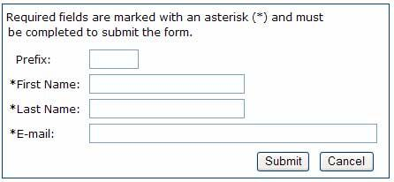
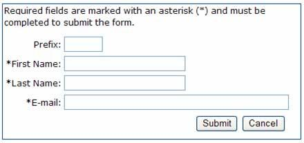

Have you ever had to fill out an online form that was too difficult to complete or simply just didn’t work? Forms can be frustrating for everyone, so creating user-friendly forms can be a real challenge. If a form is too lengthy or confusing to finish, chances are that users will make mistakes.
There is a large body of research discussing the many elements to creating usable forms. This article discusses a primary element of form design — the importance of aligning labels to fields. Should labels be placed above or adjacent to the input field, and if adjacent, should labels be right or left-aligned to the input field?
Eyetracking Research
Eye-tracking is a simple means of measuring the effectiveness of Web sites and software interfaces. It accurately measures gaze patterns, concluding what parts of Web pages and user interfaces are unseen and what parts are clearly observed by the user. It ultimately measures where on a page a user spends more time in comparison to the other parts of the page, and “introduces quantitative measurement to the field of usability evaluation, which has typically provided mostly qualitative data.”
In 2006, Penzo used eye-tracking as a means of evaluating the gaze pattern of both novice and expert users while they filled out online forms. Penzo administered an eye-tracking test by first creating a mocked-up form, which consisted of four labels and their corresponding input fields. Each participant completed the form and clicked the submit button to complete their session.
Three different label placement and alignment conditions were tested. In two of the three, labels were placed to left of the input field and were either left- or right-aligned to the corresponding input field. Penzo found that left-alignment made it easier to scan the information. Left alignment created a hard edge along the beginning of the labels so that users could predict the location of the next label and easily navigate the input fields all they way down to the submit button. Figure 1 illustrates “hard edge” with left alignment.

Figure 1: This “hard edge” example shows form field labels adjacent to the form field, with left-aligned labels.
Labels adjacent and right-aligned to the field created minimal white space between the label and the form field; the form, however, was not as easy to scan because of the inconsistent alignment of the labels. Right-aligning labels creates a jagged edge, as shown in Figure 2, because nearly all labels are different in length, forcing the eye to “guess” or make repetitive movements back and forth to search for the next beginning label in the form.

Figure 2: This “jagged edge” example form field labels adjacent to the form field with the labels right-aligned.
The third condition displayed labels above their corresponding input fields. The results showed that the layout created great vertical eye movement; the close proximity of labels to their related input fields, however, often resulted in confusion. Users were sometimes unable to determine the relationship between the label and the corresponding input field.
Other Research
Wroblewski (2006) has also research form usability. He found that left-aligned labels made it easier for the user to scan online forms. When the reading pattern is left to right and top to bottom, left alignment makes it easier for the eye to scroll down the left side of the page without the visual image of input fields interrupting user scanning. The left alignment keeps a straight flowing edge down the side of the page; whereas, right alignment creates a jagged edge forcing the eye to move back and forth to search for the next label and corresponding input field.
Nielsen (2006) found similar results using eye-tracking software and heat maps to identify how 232 users’ eyes moved across thousands of Web pages. Users’ eyes consistently followed an “F” pattern. This meant that users’ eyes generally moved horizontally across the upper-most portion of the Web site, then moved down a bit, moved horizontal again, and then primarily moved vertically down the left side of the page. Again, the scanning of the left side is evident. Nielsen recommended that “carrying words” (succinct labels) be used so that the eye is anchored to one spot and can quickly scan down the left side of the form or Web site’s content.
Summary of Results
Label alignment is a primary element of form usability. Users want to be able to look at the form quickly and be able to understand what they will be answering before they begin filling it out, and whether or not the form they are viewing is the one they intended to complete. Research and eye-tracking studies support left-alignment of labels adjacent to the input field. It enables the user to scan down the left side of the page quickly and easily.
References
Nielsen, J. (2006, April 17) Alertbox. “F-Shaped Pattern for Reading Web Content.” http://www.useit.com/alertbox/reading_pattern.html  .
.
Penzo, M. (2005, December 6) UXMatters. “Introduction to Eye-tracking: Seeing Through Your Users’ Eyes.”http://www.uxmatters.com/MT/archives/000040.php .
Penzo, M. (2006, January 23) UXMatters. “Evaluating the Usability of Search Forms Using Eyetracking: A Practical Approach.” http://www.uxmatters.com/MT/archives/000068.php .
Penzo, M. (2006, July 12) UXMatters. “Label Placement in Forms.” http://www.uxmatters.com/MT/archives/000107.php
Wroblewski, L. (2006) Functioning Form. “Top, Right or Left Aligned Form Labels.” http://www.lukew.com/ff/entry.asp?504